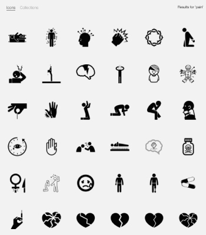
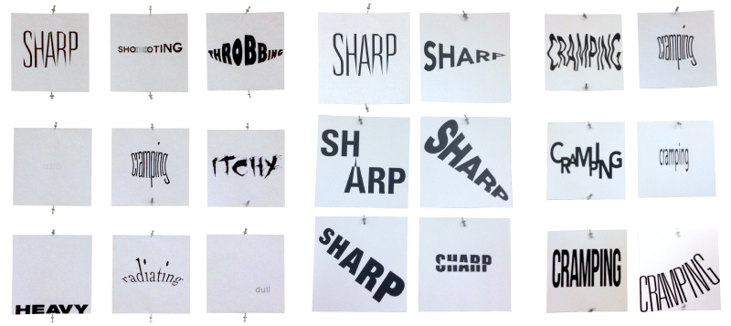
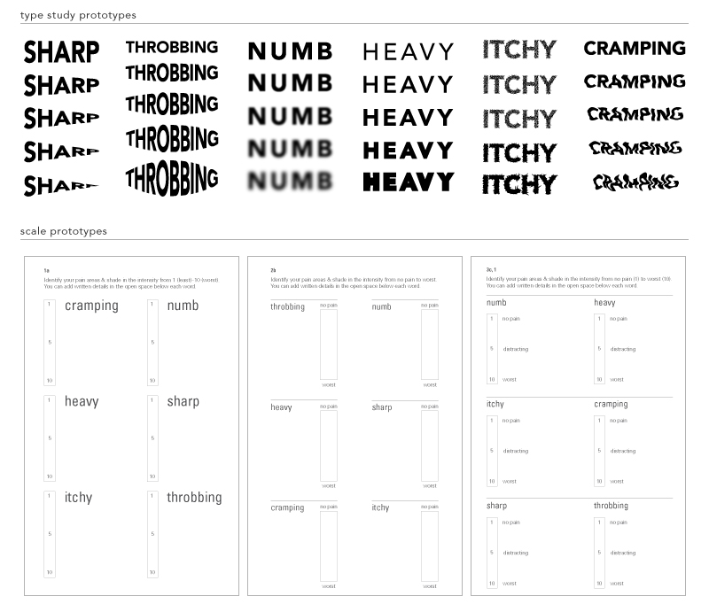
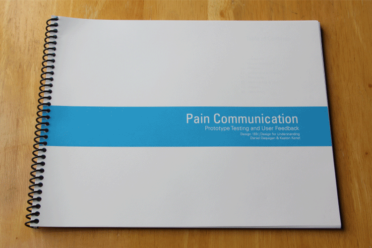

PAIN COMMUNICATION
Information Design, Motion Graphics, & Communication Research
Although this started off as a broad focus of addressing how people communicate physical pain, the main objective of this project was to explore how design can be used as a tool to make meaningful differences within current problems.
"Pain" search results from thenounproject.com
RESEARCH
To begin our brainstorming, we asked ourselves this first question:
"How do you describe physical pain?"
With my partner, we quickly identified some main issues to this question:
-
There is no universal written or visual language for pain
Everyone experiences pain differently, so one person's way of talking about pain may not work for others. -
1-to-10 Pain Scale
Of the current methods used today, the 1-to-10 Pain Scale is typically used to communicate a patient's pain. However, this generalizes pain as an overall binary measurement when one's pain may actually lie within multiple spectrums. -
Skewed pain communication = Skewed health diagnoses
Everyone's pain experiences are unique, so using standardized scales to communicate it to doctors could lead to incorrect pain analysis and therefore an inaccurate or faulty health diagnosis.
After recognizing the use of words and images as typical visual representations of pain communication in previous & current methods, my partner along with other group members explored how we could use both to communicate pain in these type studies using a list of preselected words associated with pain.
These type studies became a major turning point in our research for it opened up a new direction for our project:
-
Multiple words describing pain
Pain isn't just "1-to-10," but a collection of different feelings into one experience. Providing patients with multiple words can help them understand what they're feeling and describe their pain. -
Different pain experiences and magnitudes
Everyone in this type study had different ways of representing certain words (such as "cramping" and "sharp"). This brought to mind that patients would also experience and perceive these specific pains differently and to certain magnitudes.
From these findings, we were able to refine our project into creating an effective procedure of communicating pain between patient and doctor using visual aids.
PROTOTYPING
We selected six words to focus our project on and created different prototypes for pain communication procedures that we tested on our peers:
FINISHED SURVEY
After multiple rounds of prototyping, our final result became a survey with three parts that we administered to user-testing participants:
PART ONE: Artistic Interpretation of Pain
Everyone in this type study had different ways of representing certain words (such as "cramping" and "sharp"). This brought to mind that patients would also experience and perceive these specific pains differently and to certain magnitudes.
PART TWO: Printed Measurement Scales
Two versions: vertical and circular. Allowing the participant to view all six words at once and fill in the scale of each word.
PART THREE: Digital Animation Measurement Scales
Ten-second videos of each of the six words that animate the text to show pain intensity. Participants will have to move and pause the time marker to have all words visually represent their overall pain experience.
We asked each participant that we surveyed to recollect their current, most recent, and/or worst pain experiences. Although we provided general directions for all three portions, it was important for us as the surveyors to provide minimum guidance to ensure accurate, unbiased, and unique test results from the individual.
SURVEY FINDINGS
After follow-up questions and survey analysis, my partner and I received nothing but positive feedback from our participants and peers. Here were our findings:
- The Artistic Interpretation section helped participants freely think and produce raw representations of their pain without inhibition.
- Some participants said that having a preset of words helped them describe what they were feeling.
- Participants found the animated representations of pain useful when they weren't able to describe it in words.
- The scales provided in the printed and animated versions helped participants pinpoint their pain in detail.
Our final survey was still limited in terms of number of pain words, number of visual representations of each word, and amount of surveys we administered — these are steps that can always be made to the survey itself and will eventually evolve while we continue further surveying.
However, this overall project of helping our participants think and perceive their own physical pain made us understand design not only as a final product, but as a communication process as well.